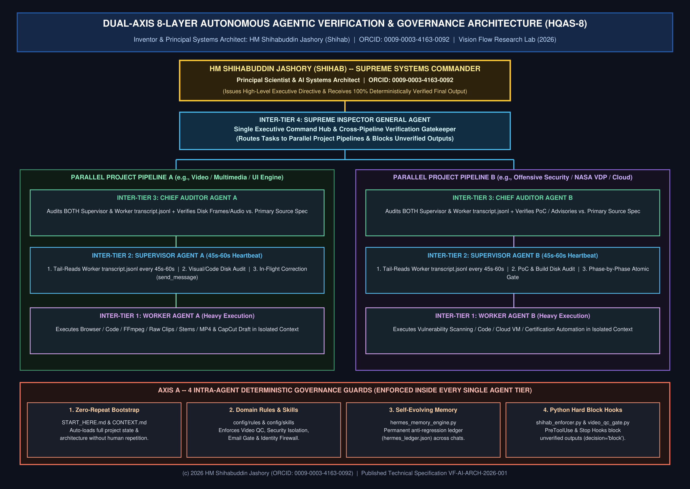
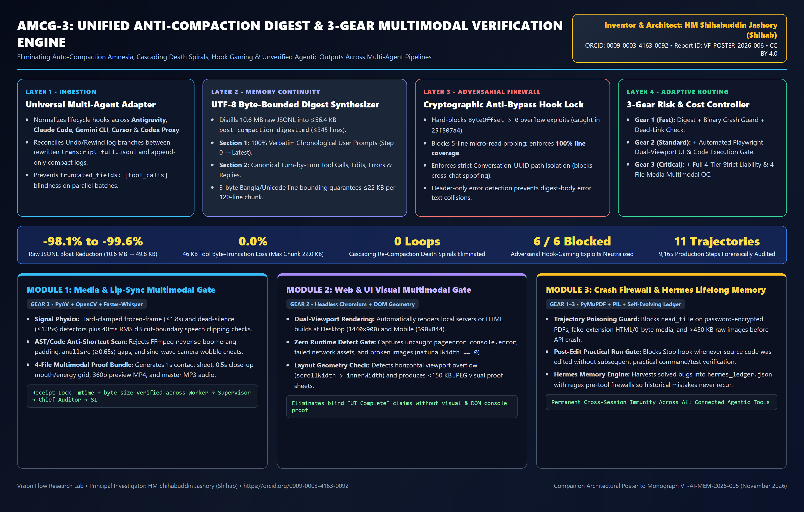

Author: HM Shihabuddin Jashory (Shihab) • ORCID: 0009-0003-4163-0092 • Date: November 10, 2026
Autonomous Large Language Model (LLM) agents frequently suffer from cascading hallucinations, premature task termination, context window degradation, and supervisory drift when deployed in long-horizon software engineering, cybersecurity auditing, and multimedia production pipelines. In this paper, we present the Dual-Axis 8-Layer Autonomous Agentic Verification and Governance Architecture (HQAS-8), designed and deployed by HM Shihabuddin Jashory. Axis A enforces four intra-agent deterministic guards inside every agent instance (Zero-Repeat Context Bootstrap, Modular Domain Rules & Skills, Hermes Self-Evolving Lifelong Memory, and Python Pre-Tool/Stop-Hook Termination Blockers). Axis B orchestrates a four-tier inter-agent hierarchy across parallel project pipelines (Worker Agent, 45s–60s Heartbeat Supervisor Agent, Dual-Transcript Chief Auditor Agent, and Cross-Pipeline Supreme Inspector General Agent).

Eliminating Auto-Compaction Amnesia and Unverified Execution in Autonomous LLM Agents: UTF-8 Byte-Bounded Trajectory Digest Synthesis (-98.1% to -99.6% bloat reduction), Anti-Bypass Hook Locks, and 3-Gear Multimodal Quality Gates. View Citation Page | Download PDF
